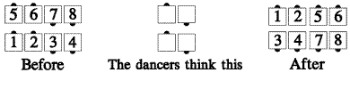

From any formation composed only of couples, for example double pass thru, facing lines, or parallel two-faced lines: This is used to modify a call, e.g., As Couples Walk and Dodge from parallel two-faced lines. Each couple acts as though it were a single dancer, and does the part of the call appropriate to its position in the starting formation.
For example, the diagrams below show As Couples Walk and Dodge. Each couple (left diagram) works as a unit, and the dancers act as though they were in a box circulate formation (center diagram). The couples facing in, take the part of single dancers facing in, and the couples facing out, take the part of single dancers facing out. The result is as shown:

For Teaching: No one should let go of his partner during an As Couples call.